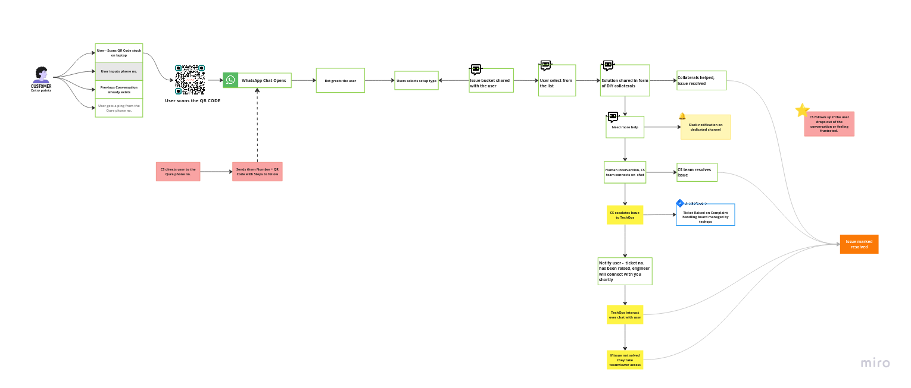
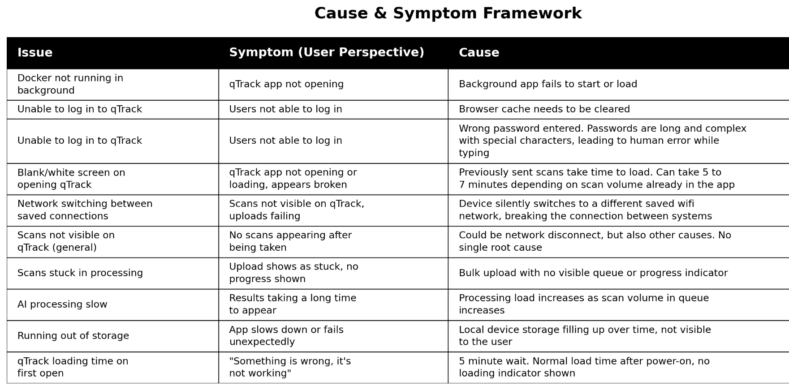
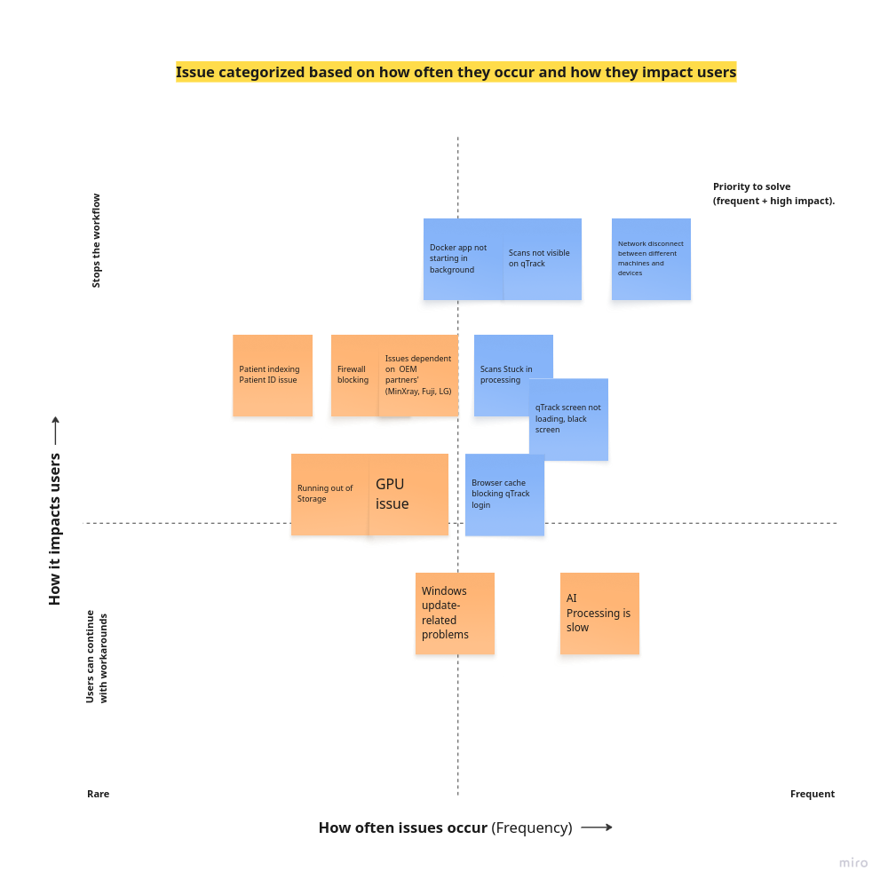
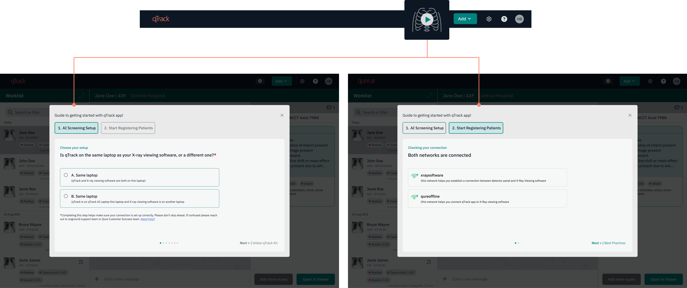
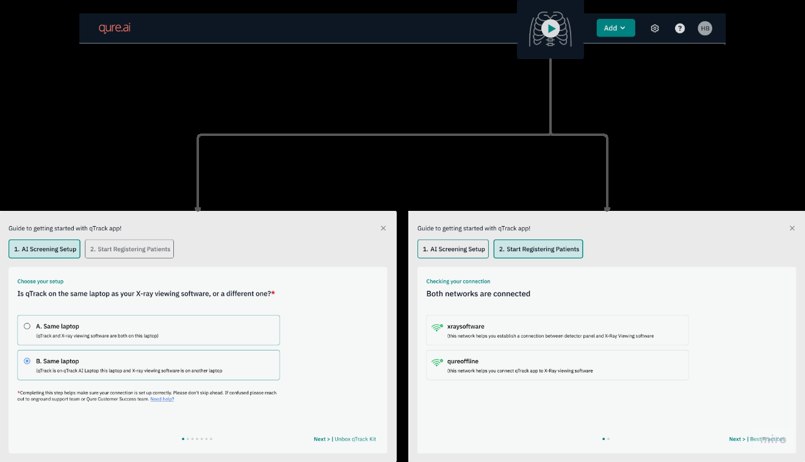
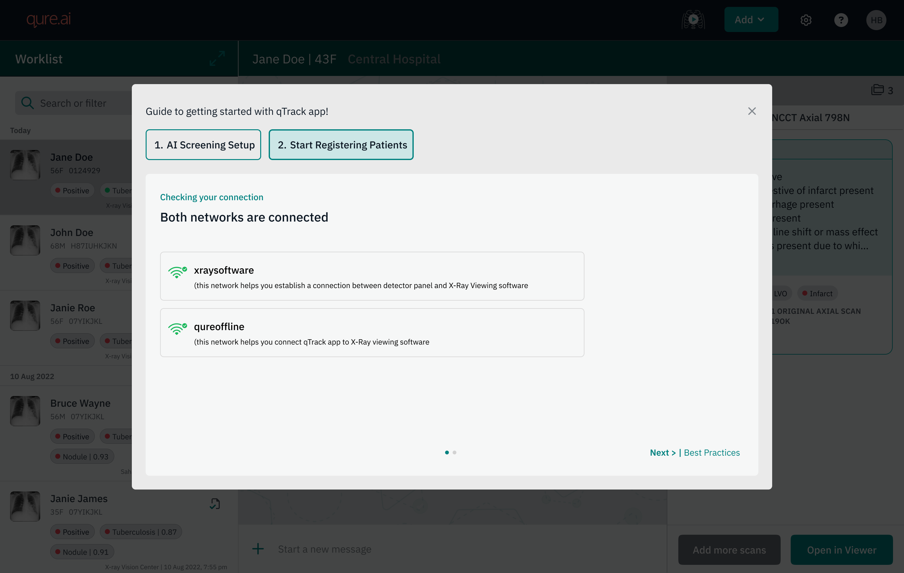
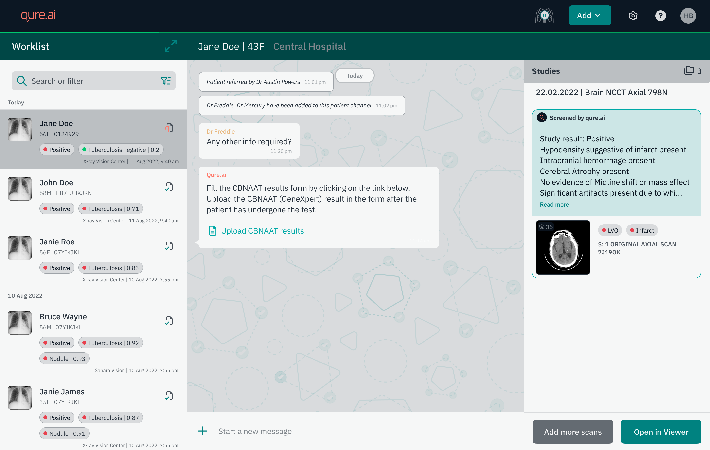
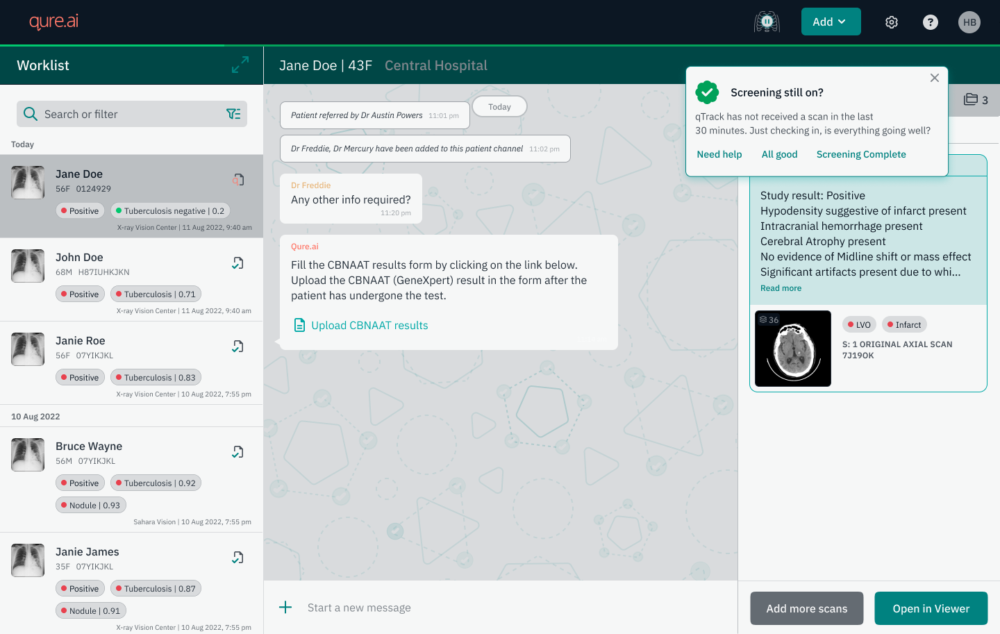
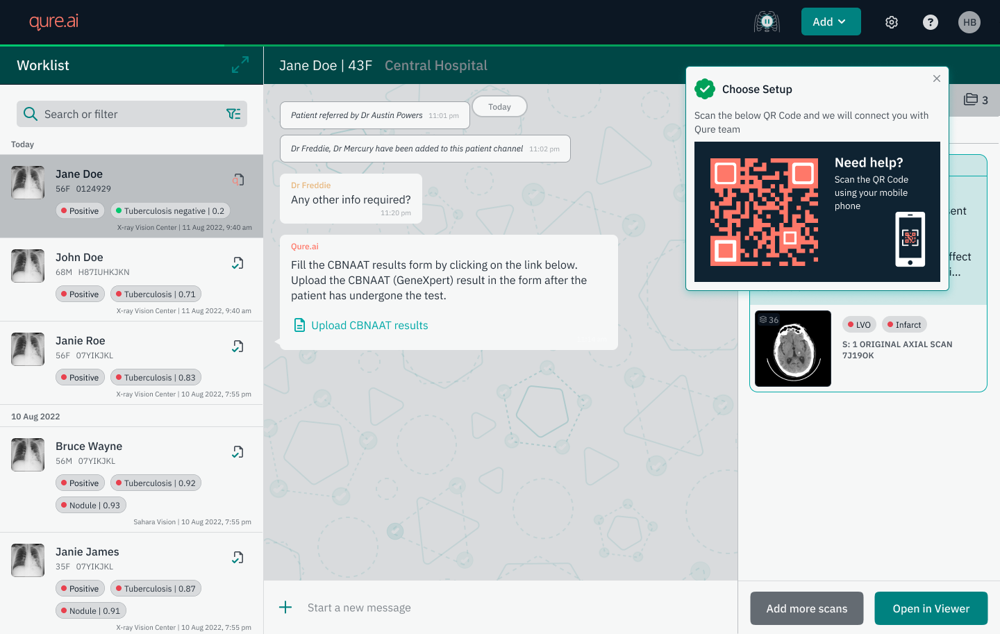

Background
Qure is a B2B AI healthcare company. Its product, qTrack, is an AI-based chest X-ray screening platform used in TB screening camps across low resource, low-connectivity environments. These camps are run day to day by a range of healthcare workers - radiologists, radiographers, TB nurses, doctors.
Problem
Leadership raised concerns about the high number of support tickets being raised by clients. It was creating a poor customer experience and client trust on the app, and a significant bandwidth of CS and TechOps was going into resolving these issues manually. Every quarter from 45 - 53% of the tickets were L1 category (basic issues which can be resolved by users themselves).
The analysis product and engineering team shared they attributed to client side mistakes rather than product faults. They framed this as a communication and knowledge gap: users did not fully understand how to use the qTrack, so this was a training problem, not something that is going wrong on the product. Whatever wrong is happening because users fully don't understand the product and it is leading to such errors.
Few approaches initially tried to solve this "communication and knowledge gap" as framed by product and engineering teams were to design collaterals (user manuals, one pagers, self troubleshooting guides) followed by a rule based chatbot.
Discovery
1. Learnings from previous approaches
Collaterals
- Had right information, but they were too complex to actually be followed and used by end users. The steps were written the way the team would explain something to each other, not the way a healthcare worker could understand and most sites did not have on site IT teams to ask help if they got stuck or faced any issue.
- Next challenge was accessibility - to make sure they are circulated with the users at the right time via WhatsApp groups and then making sure users have them hand when some issue came up.
Rule based Chatbot
- The purpose of creating chatbot was to solve the problem to have a dedicated support channel. Customer success teams maintained WhatsApp groups for every project and with scale of deployments increasing it got very difficult to manage these groups. Hence, there was a need for a dedicated support channel which will help users raise issues quicker and a faster response time.
- The chatbot had similar problem of information being too complex because same collaterals were being sent to users through the rule based chatbot workflow as a DIY solution.
- The success rate of issue getting resolved by the bot was very low.

2. Jira ticket analysis
The analysis shared by product and engineering team did not show the full picture. They often shared data from Jira by exporting the relevant fields. All the data was technical and quantitative there was no clear why for any type of issues. So, I started going through the Jira tickets myself one by one to simply understand both client and internal team side perspective.
I specifically started looking into how the issue was reported by the client, meaning how did they describe (Jira had client conversation SS). Then, how the CS team was describing the issue when raising the ticket in behalf of client and then techops engineering perspective. The techops team identifies the issue and provide RCA which was technically aligned and more accurate.
They fill the other jira field where they are supposed to categorise the issue level (L1, L2, L3) and issue type - not an issue, client side issue, issue. It further had categories like knowledge gap, communication gap, expected behaviour of product. These fields were little inconsistent throughout the tickets and was subjective to interpretation specially in L1 type issues.
3. Working with Techops
I collaborated with techops to understand what was the cause of these issues in simpler language. The purpose of this exercise was to break down technical issue in simpler language. I categorised these issues into symptom versus cause framework. What the user reported - what did they experience, versus what was actually going on underneath. Asking "why" for every issue showed different levels of each issue. What could really be understood by a non technical person and where will they need help. This gave a lot of clarity which was not possible to get by just looking at the jira tickets analysis.

How issues were added in jira was little open to interpretation the person who is assigned the ticket and resolving that issue.
- Mislabeled - The product simply wasn't telling users what was happening, so a normal delay in AI processing or background app not starting looked like a failure. Example - LAN cable unplugged from the laptop
- What users could during trainings - things users could genuinely learn, like not uninstalling a background app the system depended on, how to export CSV (feature in qTrack). Issues related to how to navigate product were also raised but that was rare.
- Out of scope of frontline healthcare workers - issues like understanding wifi switching between saved networks, which required some understanding infrastructure knowledge that had nothing to do with a healthcare worker's actual job.
Core Insight
The end users of qTrack are front line healthcare workers in their day to day they are not expected to deal with such issues or resolve them. That is not what they do. When something did not work the product stopped working or should some technical message which is not something end users can understand. These screening camps are high stress environments the product not working any way means screening would have to be stopped so in such cases end users act from panic and immediately report the issue, which is a natural behaviour.
And even where training could technically close the gap, it was not a great experience for heath care workers to start learning about engineering errors.
Scoping the opportunity
- Issues categorised based on:
- How common that issue is
- How is it impacting users
The issues prioritized were technical in nature, but the reason they were prioritized was how often they occurred and how negatively they impacted users, whether they added friction to getting into qTrack, or stopped the on-ground workflow midway. In both cases, the product wasn't signaling anything to the user: not that something had gone wrong, not what to do about it, not even a way to tell if something was wrong at all.

Issues picked - Issues shortlisted to start the design work based on what can be controlled by Qure and effort required (engineering + design).
Technical Challenges
- No single issue on this list had one clean root cause. "qTrack not opening" could mean five different things underneath, so there was no single fix to jump straight to. Instead, users needed a way to work through possibilities one at a time - ruling things out until the actual cause was clear, with the app guiding them toward the next step at each point, telling the user what was happening, instead of solving the switch itself.
- The network disconnect or switching between saved network was the starting cause for so many issues. Engineering shared this cannot be automated - detected and fixed directly, without user getting involved. This is where things get complicated its difficult for non technical health care workers understand networking. And it was not even worth it because teaching this to end users was requiring more time than actually getting familiar the product qTrack. Not a great experience if users spend more time in learning about what type of issues can occur than engaging with the product.
Design solution
With so many uncertainties there was a need of an environment which supports users in their day to day tasks and give them preventive measures to reduce the chances of errors. That is how the 'Start Screening' button was added to mimic the workflow of onground users and guide them. It is divided into 2 main sections -
- AI Screening Setup
- Start Registering Patients

Note: This case study covers "start registering patients" in more detail. To understand how section one was created, see the companion case study - Redesigning the TB Screening Camp Deployment and Setup Experience.
How workflow looks for the onground users
Users start with the AI screening Setup
While connecting their equipment during onboarding, the user names the network they're on, directly in the app. It's a small addition to a step they're already doing, not a separate task. That name gets saved, and becomes the reference point for everything that follows.
(Note: This onboarding flow, AI Screening Setup, is covered in full detail in the other case study. The network name field is the one addition made here, for this project.)
1. Network Name Field
(Addresses: Network disconnect between different machines/devices)
An addition to the first section, AI Screening Setup (onboarding flow) an input field where users can add the network name for easy recall instead of getting into technicalities. In the setup, users name the networks they are connecting to, directly in the app. Ideally this stays the same every time, but these are mobile camps, so the team packs up and sets up again regularly, which naturally leads to small errors. Devices (laptops, mobiles, tablets) can also hold onto multiple saved networks, and if one connects automatically to a different saved network instead of the intended one, the connection between the two software systems breaks and has to be reconnected by reconfiguring the IP address. That's not something a non-technical user should be expected to do, no matter how clearly the steps are written. This couldn't be automated from the backend either, since multiple networks can be involved, with no way for the system to know which one is meant for what.
How it works
Users name the network once, at setup. That name becomes the reference point the setup connection check compares against before a session starts, confirming the user is still on the network they originally intended before they move on to registering patients. Users can edit it any time something changes.
Users are ready to start registering patients
2. Network Connection Check & Best practices reminder
(Addresses: Network disconnect between different machines/devices)
The next section in the Start Screening flow is "Start Registering Patients." This runs a few last minute checks before the user begins, and surfaces best practices for a smoother session.
Two states:
- Both connected - user sees both saved network names confirmed, and can move on.
- Mismatch in connection - the app names exactly which network is missing, rather than a generic "not connected" message, so the user knows what to check. A retry button lets them recheck without restarting the whole setup.
How it works
Once the user has named their networks, the app checks their current connection status against those names once, at setup, before they start registering patients. This catches a mismatch upfront, before the TB screening camp begins, rather than letting it surface later as a "scans not visible" issue mid-session.


Camp Screening session has started
3. Running Session Bar
(Enables: background monitoring during a session)
A green bar runs across the top of the screen, just below the nav bar, for as long as a screening session is active. It does two things:
- Signals that the session is live. Since screening at a camp runs for hours at a stretch, the bar gives users a constant, ambient confirmation that they are still "in session" without needing to check anywhere else.
- Triggers the background checks that run during session - like the session check-in prompt and network monitoring - since those only make sense while screening is actually active, not when a user is just browsing patient records.
How it works
The bar appears as soon as a user taps "Start Screening" and completes setup. It stays on screen continuously until the user explicitly stops the session at the end of the day.

Checking in between the session
4. Session check in prompt
(Addresses: Scans not visible on qTrack or any on ground issues)
Scans not appearing on qTrack once pushed from the X-Ray Viewing software is a common issue and can happen for various reasons. With this check, we check -
- X-Ray scans not coming to qTrack - what's the reason? Did something break, or did something happen on the ground that needs help? This check verifies that everything on the ground is running smoothly.
- This also helps the Qure team to understand user activity by going through the logs.
How it works
- Once a user has started the screening session, the backend runs a check in the background for when the last scan was received on qTrack. If no scan comes in for 30 minutes straight, this check-in prompt appears for the user.

5. Mid Session Network change / switch
(Addresses: Network disconnect between different machines/devices)
If the network changes while a session is already active, qTrack names the change directly and surfaces it immediately so users can take action.
How it works
Once a session is active, the app continues watching the network against the name saved at setup. If it detects a change, it alerts the user right away.
